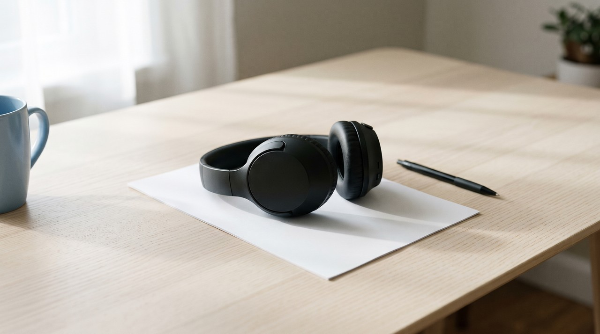
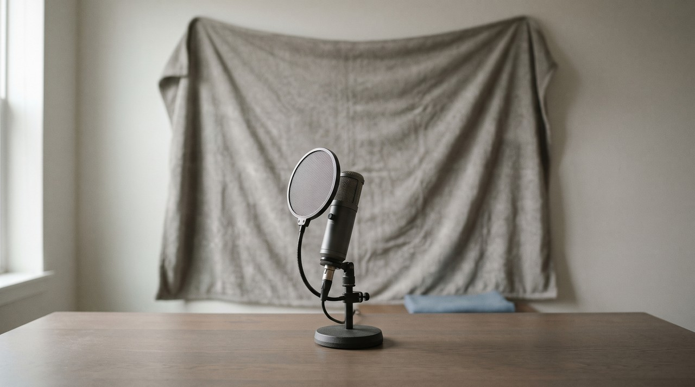

Rockstar has not announced who voices the characters in GTA 6, which launches on 19 November 2026. Cloning a character's voice with AI brings real trouble, because that voice belongs to an actual human performer and the character and audio files belong to Take-Two. So you take on two separate legal risks in a single video. The safe way is to clone your own voice, or a voice where the owner wrote down clear permission for you.
| What you want to do | Whose rights are involved | My honest verdict |
|---|---|---|
| Clone Jason's or Lucia's voice for your clips | The unnamed performer, and Take-Two | Do not do it |
| Use a "GTA 6 voice" model someone uploaded | The same two, plus whoever uploaded it | Do not do it |
| A short parody in your own voice | Mostly yours | Usually fine, but keep it obviously a joke |
| Clone your own voice for commentary | Yours | Fine, and YouTube needs no AI label for it |
| Clone a friend's voice for a sketch | Your friend | Fine with their written permission |
Written by Inam, an engineer from Pakistan; you can find my other work on designesh.com. VoiceClone is my own app and I sell it, so read my mentions of it with that in mind. Last updated 11 November 2026.
You probably watched the trailers several times, and now you want to narrate your own gaming clips using the voice of Jason or Lucia. Modern voice cloning tools make that sound like a ten minute job, and some voice sites already share models uploaded under a "GTA 6 voice" label. So you might wonder if you can just go ahead and use them.
My answer is no, and the reason is simple. A game character's voice belongs to a living person, while the script, the lines, and the actual game audio belong to the publisher. When you clone that voice, you run into both of them together. I checked the rules again on 11 November 2026, which is eight days before the game launches on 19 November, and I want to explain what I found in plain words.
Who voices Jason and Lucia in GTA 6?
Rockstar has not published an official voice cast yet. The official website lists the characters as Jason and Lucia, but it never names the actual actors behind them, and I could find no official Rockstar statement confirming names. One actor stated in an interview that he works on the game, which Kotaku reported in September 2026, but that statement came only from the actor and not from Rockstar itself.
The cast names you find on search engines are mostly guesses based on audio clips and internet rumors. That is why I do not list any names here. If a page tells you Rockstar has confirmed the GTA 6 cast, it is overstating what is known.
Why is cloning a GTA 6 character's voice a bad idea?
Two separate parties hold rights in that voice, and it is easy to overlook. The first party is the voice actor, because the tone, the accent, and the delivery come from a living human being. Many legal systems treat a person's voice as a core part of their identity, just like their face, and using it to speak new words without permission is the exact problem new voice protection laws address.
The second party is Take-Two, which owns Rockstar Games. They own the character itself, the written script, and every audio file you might feed into an AI model. Rockstar's policy on posting its material explains that Take-Two generally tolerates non-commercial fan videos, but they keep the full right to take down videos whenever they decide. That text gives you no right to train an AI model on game audio.
So even if one side never complains, the other one still can. A cloned character voice puts a performer and a publisher against you in the same video.

Has this already happened with GTA voices?
People have tried this before, and the response was very direct. In January 2024, the actor who played Michael in GTA 5 publicly pushed back against a company that built an AI chatbot of his character using a clone of his voice. As VGC reported, the company took down the post and shut down the chatbot after he spoke up.
That dispute involved a commercial company rather than an independent creator working from home. But it shows how working performers react when their voices get copied without consent, and they are the exact people whose approval you need. I would not expect the GTA 6 cast to feel any differently once their names are public.
What does the law say about cloning a real person's voice?
There is no single global rule on voice cloning, so I looked into the specific rules that exist right now. In the United States, rights covering your name, likeness, and voice are handled at the state level. Tennessee passed the ELVIS Act, which went into effect on 1 July 2024, adding voice as an explicit protected right that covers simulations of a voice linked to a real person. That law allows action against people who distribute copies, though it keeps exceptions for comment, criticism, satire, and parody.
At the federal level across the United States, the NO FAKES Act remains an unpassed bill. Lawmakers introduced it on 20 May 2026, and the Senate Judiciary Committee advanced it on 18 June 2026, but I found no vote that passed it in either chamber. I keep a detailed list of these legal updates in AI voice cloning laws in 2026.
Voice actors also work under industry union agreements. The SAG-AFTRA video game agreement ratified in July 2025 says a gaming studio must get direct consent before creating a digital voice replica of an actor. That contract governs the studios that agreed to it, but it gives individual fans no permission to clone voices, and I could not confirm if the GTA 6 cast works under this specific contract.
Here in Pakistan, I found no law written specifically for voice clones or deepfakes. Legal writers point out that the 2025 updates to PECA do not clearly handle synthetic media, as The Friday Times explained in August 2026. But once you upload a video to YouTube, it is viewable internationally, so global platform policies apply directly to your account.
Can a performer get your video removed from YouTube?
Yes, because YouTube provides a formal system where someone can report synthetic media that mimics their voice or appearance, through its privacy complaint process. That report must be filed by the affected person or their legal representative, so an outside fan cannot file it, but the actual performer can.
YouTube sets clear rules for channel owners as well. The policy on altered or synthetic content requires uploaders to check the disclosure box whenever realistic media makes an actual human appear to say words they never spoke. Uploading a synthetic actor voice reading your custom script is very close to that, and skipping the label is a risk to your channel. If you upload a cloned performer's voice, you are the person YouTube will hold responsible.
What about a parody or a voice that only sounds similar?
Recording your own spoken parody is a completely different situation. Imitating a famous voice yourself to make a joke is a standard creative format on radio and stage, and laws like the Tennessee one list parody as an exception. The core technical difference is that an impression relies on your own vocal cords, while AI cloning uses software trained on someone else's recorded audio.
Downloading a voice model labeled as a sound-alike is not as safe as it looks. If whoever trained that model used audio rips from the game or the trailers, the dataset came from Take-Two's recordings, no matter what title the creator gave the file. You have no way of verifying what went into the dataset. If you did not record the training audio yourself and you have no written permission, do not use that voice.
What should you do instead?
The best voice to use on your GTA 6 videos is your real speaking voice, and that helps with more than just legal safety. YouTube's game rules favor commentary that explains what is happening on screen, which I wrote about in what really pays from GTA 6 clips. Speaking in your own voice and sharing your genuine perspective fits those requirements cleanly.
These are the practical options I recommend, starting with the safest choices and moving to the ones that require extra care:
- Record your commentary on a microphone, and then clone your own voice to patch in lines you missed later. YouTube explicitly states that using a clone of your own voice for voiceover work does not require a synthetic content label.
- Ask a friend to read character lines for your video, and get their clear agreement in writing before you clone their audio. I share an outline of what to write in that note in is voice cloning legal.
- Create your own original character with a unique name and your own voice, rather than copying a character out of the game files.
- Leave game dialogue inside the game itself. Do not rip voice lines from the game to build training datasets.
If you choose to clone your own voice, sit down and record a clean audio sample now so you avoid the launch week rush. My recording tips explain how to capture a clear take that clones cleanly.

Where does VoiceClone fit?
I created VoiceClone to handle one specific task: cloning your own voice locally on a Windows 10 or 11 computer. It runs GPT-SoVITS on your local hardware, so your personal audio recordings never leave your own hard drive. The processing runs faster if you have an NVIDIA graphics card, but it also runs fine on a standard processor, just with longer render times. The software is built for English speech.
I did not build this tool to duplicate video game actors, and I do not want people using it that way. Run it only on your own voice, or on audio where the speaker gave you written consent. The free edition allows you to clone and fully train one voice, one time, and then make 3 generations to check it. If the tool fits your needs, the full version is a $49 one time license with no subscription, and the free version is on the download page.
FAQ
Who are the GTA 6 voice actors?
Rockstar has not published a cast list. One actor mentioned in an interview that he works on the game, but Rockstar has not confirmed any names officially, and most lists on the web are guesses. That is why I do not list any names here.
Is it legal to clone Jason's or Lucia's voice with AI?
I would not count on that being legal. The vocal tone belongs to an actual human performer and the character belongs to Take-Two, and certain jurisdictions like Tennessee protect individual voices under state law. Rockstar's published rules do not permit creating an AI voice model from their game audio.
Can I use a GTA 6 voice changer for a joke video?
Performing a vocal impression yourself for a joke is very different from using software to clone an actor. An AI model trained on game audio still uses recordings of an actual performer and Take-Two's files, so I would avoid using one even for a comedy skit.
Do I need an AI label for my own cloned voice on YouTube?
No, you do not need one. YouTube explicitly notes that cloning your own voice for narration or dubbing does not require an altered content label. You must apply the label if your video uses synthetic tools to show a real person saying things they never said.
Sources reviewed on 11 November 2026 unless noted otherwise: Rockstar Games Grand Theft Auto VI official page and its policy on posting copyrighted material, Kotaku reporting on 14 September 2026, VGC reporting on 15 January 2024, Davis Wright Tremaine legal overview of the ELVIS Act from April 2024, press release from Senator Blackburn's office in June 2026, SAG-AFTRA 2025 Interactive Media Agreement documentation, The Friday Times from 19 August 2026, and YouTube Help documentation regarding privacy complaints and synthetic content. This article reflects my own reading of these materials and is not legal advice.
Hear your own voice come back.
The free Windows app clones and fully trains one voice, yours, on your own PC. No account, no upload, and the download starts right away.